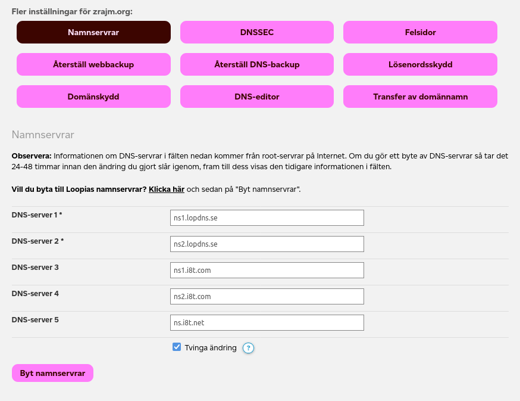

<!DOCTYPE html><meta charset=utf-8><!--*- markdown -*-->
<link rel=stylesheet href=/www/nojs.css><textarea disabled>

Author: zrajm
Created: 2025-05-03 20:37+02:00
Updated: 2025-10-16T06:10+02:00
License: CC BY-NC-SA (text), GPLv2 (code).


# My Domain Setup

<style>td,th{line-height:1.5;vertical-align:top;white-space:nowrap}</style>

> This documents the setup needed for web pages and email to work on my two
> domains, `klingonska.org` and `zrajm.org`.
>
> I use *Gmail* for email, and *Github Pages* for my web pages. In order to be
> able to easily move my web pages (should the need arise) I avoid using
> hosting-specific scripting solutions.
>
> Beyond that, I’ve tried to set things up as cheap and reliable as
> possible.—The domain names have to be paid for, of course, but the for the
> other services I’m using free alternatives.

<toc heading="Contents" id=contents upto=2 class="toc hanging">

-------------------------------------------------------------------------------


Overview
========
[Overview]: #overview

| Description                   | URL                |
|-------------------------------|--------------------|
| Email client                  | [gmail.com]        |
| [Web Sites]                   | [github.com]       |
| [DNS]                         | [lopdns.se]        |
| [Email forwarding] (to Gmail) | [forwardemail.net] |
| [Domain administration]       | [loopia.se]        |

Basically, in my everyday life I read email using Gmail, and do a little bit of
web page work every now and then which I push to Github using Git. All the
other services are more-or-less of the set-and-forget variety. (This document
is mostly meant to help me keep a track of what I've configured, and where, for
those rare times when I need to change something.)


Domain Administration
=====================
[Domain Administration]: #domain-administration

> My domain administrator is Loopia ([loopia.se]). They are responsible for
> renewing my domain names, and sending me the bill.

This is company is a web hotel which resides in the same country as me (which
simplifies the paying of the bills), but I’m not using any of their web hotel
features. In the free tier I’m in, there’s only one setting available in their
web portal—which DNS to use.

<p><p>To set DNS details, log in, click the relevant domain name, and then (in
the overlay that appears) click “Namnservrar” (“Name Servers”) in the array of
buttons. After doing so, scroll down a bit to see the relevant settings:

<figure style="margin:calc(var(--leading) * 1rem) 0">
  
  <figcaption style=text-align:center>
    Name server settings in Loopia’s “Customer Zone”.
  </figcaption>
  </figcaption>
</figure>

The DNS settings used here were provided by the company used for [DNS]:

  | Name            | Host            |
  |-----------------|-----------------|
  | DNS-server 1 \* | `ns1.lopdns.se` |
  | DNS-server 2 \* | `ns2.lopdns.se` |
  | DNS-server 3    | `ns1.i8t.com`   |
  | DNS-server 4    | `ns2.i8t.com`   |
  | DNS-server 5    | `ns.i8t.net`    |


DNS
===
[DNS]: #dns

> For DNS I use LopDNS ([lopdns.se]), a free Swedish DNS service. These DNS
> settings points out where email forwarding and web pages are hosted.

Below settings settings do the following:

* [DNS] server itself is pointed to (`NS` records).
* [Verify domain] setting for Github (`TXT` record with `_github…`).
* [Web sites] are pointed to (`A` and `AAAA` records).
* [Redirects] `www` subdomain to main site (`CNAME` record).
* [Email forwarding] (`MX` records, and `TXT` record with `forward-email=…`).

Below are the DNS settings for I use `zrajm.org` (except for a loooong
alphanumeric string in one of the `TXT` records which I’ve replaced with
`STUFF` below, for brevity).

  | Name                                    | Type  | Value                          |   TTL | Pri |
  |-----------------------------------------|-------|--------------------------------|------:|----:|
  | zrajm.org                               | NS    | ns1.i8t.com.                   | 10800 |   0 |
  | zrajm.org                               | NS    | ns2.i8t.com.                   | 10800 |   0 |
  | zrajm.org                               | NS    | ns.i8t.net.                    | 10800 |   0 |
  | zrajm.org                               | NS    | ns1.lopdns.se.                 | 10800 |   0 |
  | zrajm.org                               | NS    | ns2.lopdns.se.                 | 10800 |   0 |
  | _github-pages-challenge-zrajm.zrajm.org | TXT   | e5e668726baf3bcb686bbfbdead4f6 |  3600 |   0 |
  | www.zrajm.org                           | CNAME | zrajm.github.io                |  3600 |   0 |
  | zrajm.org                               | A     | 185.199.108.153                |  3600 |   0 |
  | zrajm.org                               | A     | 185.199.109.153                |  3600 |   0 |
  | zrajm.org                               | A     | 185.199.110.153                |  3600 |   0 |
  | zrajm.org                               | A     | 185.199.111.153                |  3600 |   0 |
  | zrajm.org                               | AAAA  | 2606:50c0:8000::153            |  3600 |   0 |
  | zrajm.org                               | AAAA  | 2606:50c0:8001::153            |  3600 |   0 |
  | zrajm.org                               | AAAA  | 2606:50c0:8002::153            |  3600 |   0 |
  | zrajm.org                               | AAAA  | 2606:50c0:8003::153            |  3600 |   0 |
  | zrajm.org                               | MX    | mx1.forwardemail.net           |  3600 |  10 |
  | zrajm.org                               | MX    | mx2.forwardemail.net           |  3600 |  10 |
  | zrajm.org                               | TXT   | forward-email=STUFF            |  3600 |   0 |

Most of the settings looks the same for `klingonska.org`, except for the domain
name being different and `TXT` and `CNAME` records having different values:

  | Name                                         | Type  | Value                          |   TTL | Pri |
  |----------------------------------------------|-------|--------------------------------|------:|----:|
  | klingonska.org                               | NS    | ns1.i8t.com.                   | 10800 |   0 |
  | klingonska.org                               | NS    | ns2.i8t.com.                   | 10800 |   0 |
  | klingonska.org                               | NS    | ns.i8t.net.                    | 10800 |   0 |
  | klingonska.org                               | NS    | ns1.lopdns.se.                 | 10800 |   0 |
  | klingonska.org                               | NS    | ns2.lopdns.se.                 | 10800 |   0 |
  | _github-pages-challenge-zrajm.klingonska.org | TXT   | 4226df5f35422044c2d962c2e69d10 |  3600 |   0 |
  | klingonska.org                               | A     | 185.199.108.153                |  3600 |   0 |
  | klingonska.org                               | A     | 185.199.109.153                |  3600 |   0 |
  | klingonska.org                               | A     | 185.199.110.153                |  3600 |   0 |
  | klingonska.org                               | A     | 185.199.111.153                |  3600 |   0 |
  | klingonska.org                               | AAAA  | 2606:50c0:8000::153            |  3600 |   0 |
  | klingonska.org                               | AAAA  | 2606:50c0:8001::153            |  3600 |   0 |
  | klingonska.org                               | AAAA  | 2606:50c0:8002::153            |  3600 |   0 |
  | klingonska.org                               | AAAA  | 2606:50c0:8003::153            |  3600 |   0 |
  | klingonska.org                               | MX    | mx1.forwardemail.net           |  3600 |  10 |
  | klingonska.org                               | MX    | mx2.forwardemail.net           |  3600 |  10 |
  | klingonska.org                               | TXT   | forward-email=STUFF            |  3600 |   0 |
  | www.klingonska.org                           | CNAME | klingonska.org                 |  3600 |   0 |

I didn’t come up with the above values myself. Instead, they were given to me
by the various services I use (described elsewhere in this document). Except
for the `NS` records which are default values, already set when I first logged
in to LopDNS.

As I were experimenting with getting these values right, I often set the TTL
(“Time to Live”) value to zero. Then, after having verified that some
particular set of values (such as, the mail related settings) were working, I
would go back and set the TTL to 3600 seconds (=1 hour).

TTL defines how long a value should be cached by other computers on the network
before being re-read from the DNS server. A TTL of zero means that it should be
re-fetched on every request (a good value for debugging, but bad for
performance).


Web Sites
=========
[Web Sites]: #web-sites

> My web sites are hosted by *Github Pages* ([pages.github.com]).
>
> The web site [zrajm.org] is built as a “personal page” (in Github’s
> parlance), while my site about the Klingon language, [klingonska.org], is a
> “project page”.

I’m a long time Git user, and so using Git for publishing and updating web
sites is a no-brainer. (Whether *Github,* owned by Micro$oft, is the best place
though…—I might move in the future.)

Information I found online led me to believe that a non-paying Github user
could only have a *single* custom domain (that is, a separately registered
domain name, as opposed to the domain name provided by Github, ending in
`github.io`).—However, the “Custom Domain” setting is available for all
repositories (under “Settings ⇒ Github Pages”) and there does not seem to be
any particular limit to its use, even for non-paying users.

Though, each Github user may only have one *personal page,* which acts like a
root page for all *project pages.* In the default setup, the personal web page
gets the address `USERNAME.github.io` (which must also be the name of the
Github repo), and the individual project pages get
`USERNAME.github.io/REPONAME`. (For all repos with a custom domain specified in
its settings, the `github.io` address still works, but redirects to the custom
domain.)


`zrajm.org`
-----------
[zrajm.org]: #zrajmorg

> My personal web site, [zrajm.org], is a Github *personal page* built from the
> repo [git@github.com:zrajm/zrajm.github.io.git][zrajm.git].—This site
> functions as a personal web page, and a menu over all of my various projects
> (each in separate repositories).


`klingonska.org`
----------------
[klingonska.org]: #klingonskaorg

> My Klingon language site, [klingonska.org], is a Github *project page* built
> from the repo
> [git@github.com:zrajm/klingonska.org-published][klingonska.git].—This repo
> only contains generated files, which are built from the source found in a
> different repository, namely
> [github.com/zrajm/klingonska.org][klingonska-src.git] (which contains the
> actual source of the web page).


Redirects
---------
[Redirects]: #redirects

> If a user mistakenly adds `www` to the beginning of the web site address or
> use old HTTP protocol (instead of HTTPS), they should get redirected to the
> proper address.

<!--
> My web pages use apex domains (where the address is *not* prefixed by `www`),
> and the HTTPS protocol (encrypted, as is the standard nowadays). For this to
> work smoothly for everyone everywhere, the `www` and HTTP addresses are
> redirected to the corresponding *actual* address (either `zrajm.org` or
> `klingonska.org`).-->

**Testing that the redirects work:** If all redirects are set up correctly, the
following command should show three identical `location:` headers (one for each
of the redirects). They should each contain the canonical name of the web site
(an address starting with `https:`, but without a leading `www` subdomain).

```
$ DOMAIN=zrajm.org
$ curl -si http{,s}://{,www.}$DOMAIN | grep -i '^location:'
location: https://zrajm.org/
location: https://zrajm.org/
location: https://zrajm.org/
```


### HTTPS Redirects on Github
[HTTPS Redirects on Github]: #https-redirects-on-github

**Problem:** Getting HTTPS redirects to work on Github took a while, because
Github does not automatically generate all the certificates needed. Loading the
web page using its canonical address (`zrajm.org`) worked just fine, but trying
to load it through a redirect (e.g. `www.zrajm.org`) would result in Firefox
displaying a “Your connection is not secure” warning, and refusing to load the
page.

<p><p>**Background:** On HTTPS, for a redirect to work, certificates need to be in
place for *both* the source domain (that does the redirect), *and* the target
domain (that then serves the actual web page).

This is because when a user loads a web page, the certificate is checked as the
very first part of the connecting process, *before* the web page itself is
loaded—and it is *only when trying to load the web page* that the server
responds with “Naaah! That page is actually on [new address].” (Whereupon this
connection is dropped, and the whole connecting process starts over, using this
new address, first checking the certificate for the new address, and then
asking for the web page.)

<p><p>**Solution:** In the end, I got all the redirects to work on Github by
first configuring my web page *as if* I wanted to use the `www` subdomain for
my pages, then waiting a while for the DNS settings to take effect. And then,
after this setup was up and running, I modified my Github settings to now use
the apex domain instead. (I know that this sounds like a really janky solution,
and something that might unfix itself whenever Github renews the certificates,
but I found a discussion thread online [on reddit?, stackoverflow?] indicating
that several people had tried this, and that their certificates were renewed by
Github at expire time.)

<!-- `CNAME` record in the DNS to redirect from the subdomain to the apex. -->

<p><p>I found the following links useful in finding the above answer:

* https://www.reddit.com/r/github/comments/ihkfxs/multiple_custom_domains_on_single_github_account/
* https://deanattali.com/blog/multiple-github-pages-domains/
* https://stackoverflow.com/questions/59596179/github-pages-redirect-non-www-root-domain-to-www-subdomain


Verify Domain
---------------
[Verify Domain]: #verify-domain

This is useful since prevents other Github users from taking over a domain, in
case it (accidentally) become available, for example, because you erase its
repo, or because a payment plan changes. A verified domain (and its subdomains)
can only updated by the personal account or organization that verified it.

Verification entails running through a Github form, and adding some DNS
settings (one `TXT` record for each domain). Which exact DNS records to set is
explained by the Github form. (See [GitHub domain verification] docs.)

In the above settings the `_github-pages-challenge-USERNAME.DOMAIN` records are
related to verification.


Email Forwarding
================
[Email Forwarding]: #email-forwarding

> In order to receive email sent to my custom domains (`@zrajm.org` &
> `@klingonska.org`) and be able to read them using my Gmail account, an email
> forwarding service is needed (as Gmail themselves do not directly support
> custom domains). This is the setup I use.

I use *Forward Email* (http://forwardemail.net), which is a company that offers
free email forwarding. Setting up a new domain is done by clicking the “Domain
+” button and then copying the values provided into your DNS. After having done
this (and, if needed, waited the appropriate time for the DNS settings to take
effect) click the “Verify” button to verify that you got it right.

I added the following values to my DNS for `zrajm.org` (the string `STUFF`
replaces a really long alphanumerical string that will be different for you
anyway):

  | Name      | Type | Value                |  TTL | Pri |
  |-----------|------|----------------------|-----:|----:|
  | zrajm.org | MX   | mx1.forwardemail.net | 3600 |  10 |
  | zrajm.org | MX   | mx2.forwardemail.net | 3600 |  10 |
  | zrajm.org | TXT  | forward-email=STUFF  | 3600 |   0 |

And for `klingonska.org`:

  | Name           | Type | Value                |  TTL | Pri |
  |----------------|------|----------------------|-----:|----:|
  | klingonska.org | MX   | mx1.forwardemail.net | 3600 |  10 |
  | klingonska.org | MX   | mx2.forwardemail.net | 3600 |  10 |
  | klingonska.org | TXT  | forward-email=STUFF  | 3600 |   0 |

And with the above settings in my DNS, and my Forward Email account it looks
like email is arriving as it should!

Sending email, on the other hand, is a different matter. Emails I send still
clearly indicate that they come from Gmail, and specify my Gmail address as
`Return-Path`. I’ll need to get back to this point!

* https://www.reddit.com/r/gsuitelegacymigration/comments/14l04k6/simplest_way_to_get_gmail_with_custom_domain/
* https://www.reddit.com/r/Domains/comments/m1k6oh/email_forwarding_for_your_domain/


TODO: Remaining
===============
[TODO: Remaining]: #todo-remaining

* Make email look like it comes from `klingonska.org` and `zrajm.org`, rather
  than Gmail.

[GitHub domain verification]: https://docs.github.com/en/pages/configuring-a-custom-domain-for-your-github-pages-site/verifying-your-custom-domain-for-github-pages
[forwardemail.net]: https://forwardemail.net
[github.com]: https://github.com
[gmail.com]: https://gmail.com
[klingonska-src.git]: https://github.com/zrajm/klingonska.org
[klingonska.git]: https://github.com/zrajm/klingonska.org-published
[loopia.se]: https://loopia.se
[lopdns.se]: https://lopdns.se
[pages.github.com]: https://pages.github.com
[zrajm.git]: https://github.com/zrajm/zrajm.github.io

</textarea><script type=module src=/www/scent.js></script>
<!--[eof]-->
